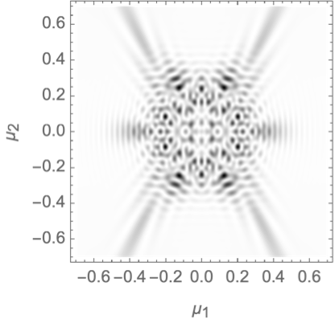
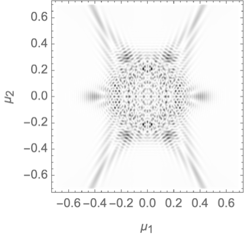
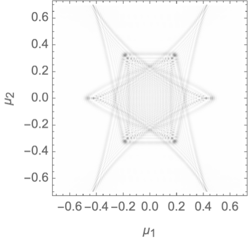
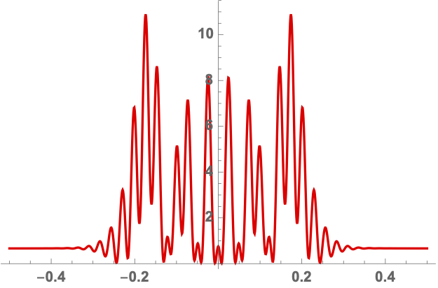
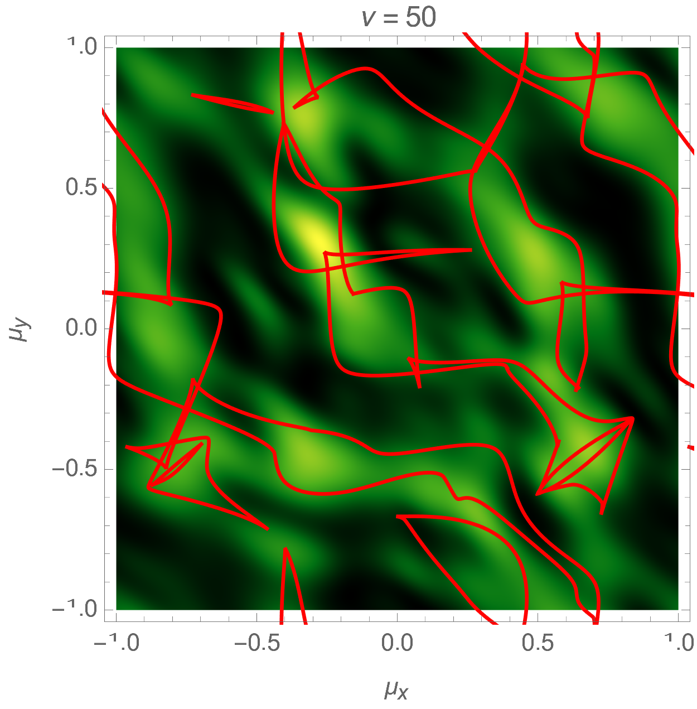
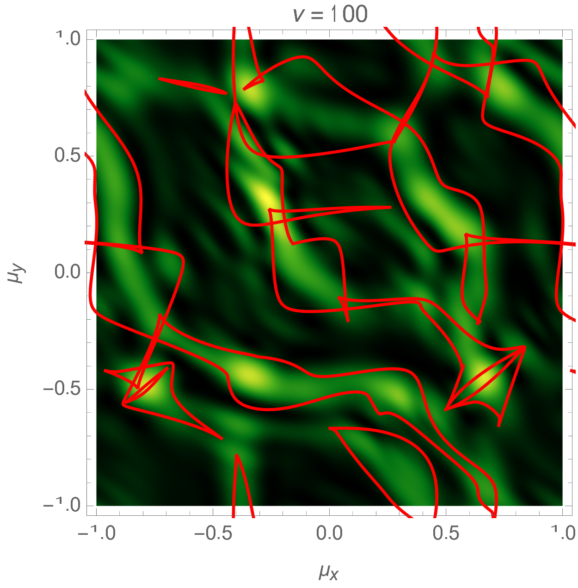
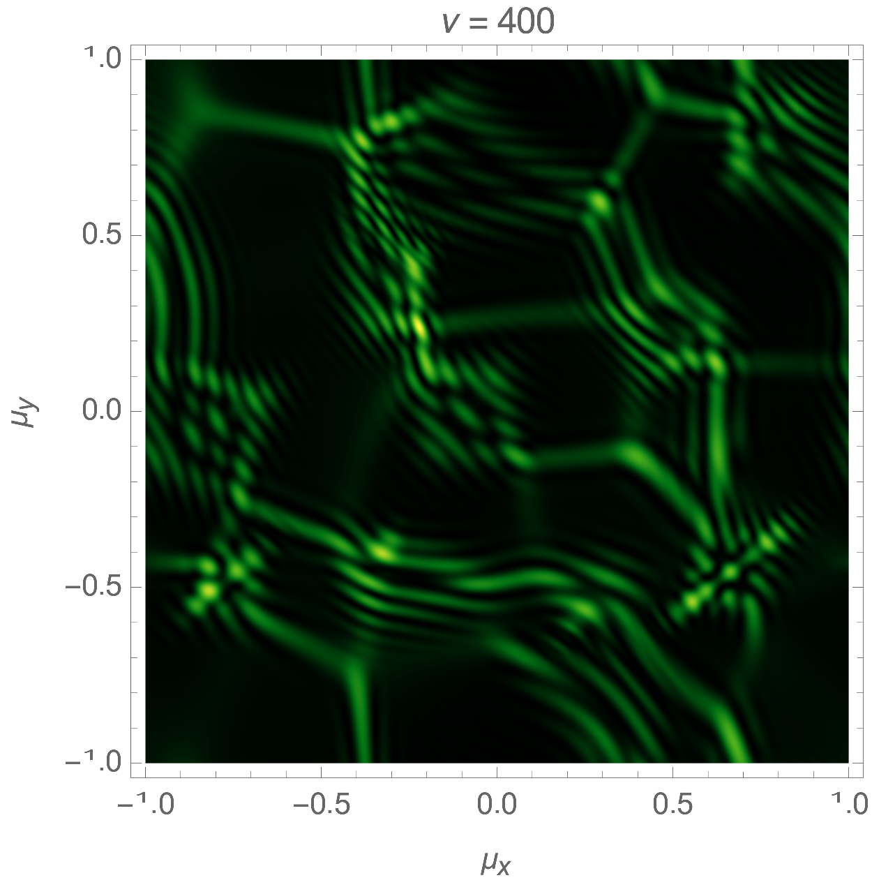
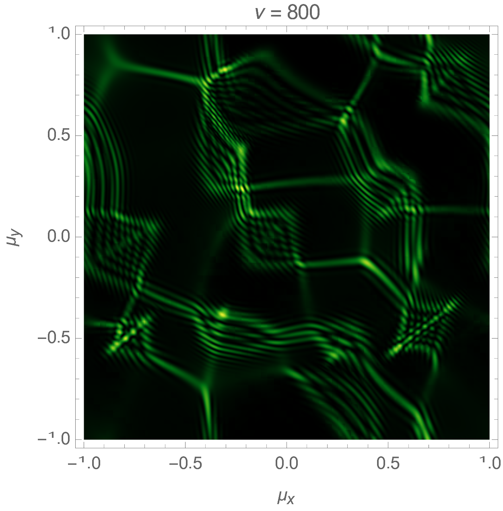
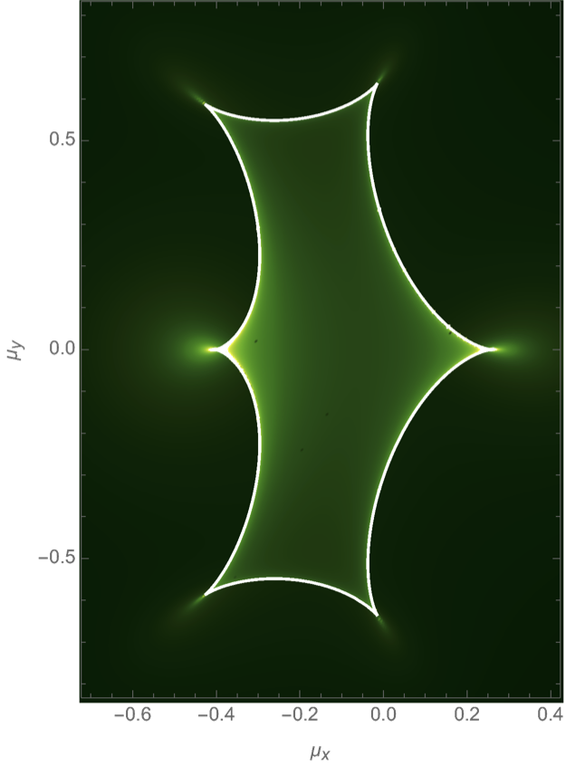

Interference is one of the most universal phenomena in nature. In classical physics, the linear superposition of sound waves, surface waves, radio waves, light or gravitational waves all exhibit the same characteristic patterns of constructive and destructive interference. Interference is also fundamental to quantum physics. The basic quantum amplitudes describing particles or fields are most elegantly formulated as path integrals – sums over trajectories weighted by the phase factor \(e^{iS/\hbar}\) with \(S\) the action and \(\hbar\) Planck’s constant. As ubiquitous as interference and interference patterns are, they are generally hard to compute. The oscillatory integrals involved are only conditionally and not absolutely convergent, meaning they converge slowly and artefacts such as dependence on unphysical cutoffs may be hard to avoid. Likewise, if the integrals are performed iteratively, as is often the only practicable method, conditional convergence is in general insufficient to guarantee uniqueness, since the order in which partial integrals are taken can affect the result.
Cauchy’s theorem allows one to transform a computationally fragile and expensive, highly oscillatory integral into an exactly equivalent sum of absolutely and rapidly convergent integrals which can be evaluated in polynomial time. We require only that it is possible to analytically continue the lensing phase, expressed in the integrated coordinates, into the complex domain. Picard-Lefschetz theory is a systematic method to find the optimal deformation of the integration domain. We here describe Picard-Lefschetz theory and provide a numerical implementation of Picard-Lefschetz theory for both one- and two-dimensional integrals accompanying the recent papers Feldbrugge, Pen, and Turok 2019 ….
|  |  |  |
Consider the oscillatory integral \[I = \int_{\mathbb{R}^n} e^{i \phi(\boldsymbol{x})}\mathrm{d}\boldsymbol{x},\] with the analytic exponent of the integrand \(\phi:\mathbb{R}^n \to \mathbb{C}\). This integral is generally highly oscillatory and difficult to evaluate. We can improve the properties of the integral by analytically continuing the integrand into the complex plane and continuously deforming the integration domain to the Lefschetz thimble \(\mathcal{J} \subset \mathbb{C}^n\) removing the oscillatons, \[I = \int_{\mathcal{J}} e^{i \phi(\boldsymbol{x})}\mathrm{d}\boldsymbol{x}.\]
In order to obtain the Lefschetz thimble, we first express the exponent \(i\phi\) in terms of a real and an imaginary part \[i\phi(\boldsymbol{x}) = h(\boldsymbol{x}) + i H(\boldsymbol{x}).\] Note that \(h\)-function determines the magnitude of the integrand. We define the downwards flow \(\gamma_\lambda:\mathbb{C}^n\to \mathbb{C}^n\) of the \(h\)-function with the differential equation \[ \frac{\mathrm{d} \gamma_{\lambda}(\boldsymbol{x}_0)}{\mathrm{d}\lambda} = -\nabla h(\gamma_\lambda(\boldsymbol{x}_0)),\] with the boundary condition \(\gamma_0(\boldsymbol{x}_0) = \boldsymbol{x}_0 \in \mathbb{C}^n\). The downward flow defines a continuous deformation of the integration domain \(\gamma_\lambda(\mathbb{R}^n),\) from the original domain at \(\lambda=0\) to the Lefschetz thimble in the limit \(\lambda \to \infty\), \[\mathcal{J} =\lim_{\lambda \to \infty} \gamma_\lambda(\mathbb{R}^n).\] Since the thimble \(\mathcal{J}\) is a fixed point of the downward flow \(\gamma_\lambda\), it can generally be expressed as a formal sum over steepest descent contours \[ \mathcal{J} = \sum_i n_i \mathcal{J}_i,\] with \(n_i \in \mathbb{Z}\) and \(\mathcal{J}_i\) the steepest descent contour of the saddle point \(\bar{\boldsymbol{x}}_i \in \mathbb{C}^n\) of the exponent \(i\phi.\) Using the Cauchy-Riemann equation, \(\nabla h \cdot \nabla H = 0\), it straigforwardly follows that the imaginary part, \(H\), is constant along the steepest descent contours, i.e., \[H(\boldsymbol{x})|_{\mathcal{J}_i} = H(\bar{\boldsymbol{x}}_i),\] removing the oscillations of the integral, i.e., \[I = \int_{\mathcal{J}} e^{i\phi(\boldsymbol{x})} \mathrm{d}\boldsymbol{x} = \sum_i n_i e^{i H(\bar{\boldsymbol{x}}_i} \int_{\mathcal{J}_i} e^{h(\boldsymbol{x})}\mathrm{d}\boldsymbol{x}.\] For more details see …
The Fresnel integral \[I_F = \int_{-\infty}^{\infty} e^{i x^2} \mathrm{d}x,\] is a typical example of a conditionally convergent integral as the integrand has unit magnitude, i.e., \(|e^{ix^2}| = 1\). The integral is often defined in the limit \(I_F = \lim_{R\to \infty}I_F(R)\) of the partial integral \[ I_F(R) = \int_{-R}^{R} e^{ix^2}\mathrm{d}x.\] In the limit \(R \to \infty\), the partial integral \(I_F(R)\) runs over a spiral in the complex plane converging to the point \((1+i) \sqrt{\pi / 2}\) (see Fig. 2).
This is a well-defined definition of the one-dimensional Fresnel integral. However, it is delicate, inefficient and moreover does not easily generalize to multi-dimensional conditionally convergent integrals where the result can depend on the way we take the limit. Instead, we can analytically extend the exponent into the complex plane \(\mathbb{C}\) and use the downward flow \(\gamma_\lambda\) \[\gamma_\lambda(\boldsymbol{x}_0) = [x_{r0} \cosh(2\lambda) + x_{i0} \sinh(2\lambda)] + [x_{r0} \sinh(2\lambda) + x_{i0} \cosh(2\lambda)] i\] with \(\text{Re}[x_0]=x_{r0}\) and \(\text{Im}[x_0]=x_{i0}\), to obtain the Lefschetz thimble \[ \mathcal{J} = \lim_{\lambda\to \infty}\gamma_{\lambda}(\mathbb{R}) = \{(1+i)u | u \in \mathbb{R}\}.\] Along the Lefschetz thimble, the Fresnel integral is tranformed into the Gaussian integral \[I_F=\int_{\mathcal{J}} e^{i x^2}\mathrm{d}x = (1+i) \int_{-\infty}^{\infty} e^{- 2 u^2}\mathrm{d}u = (1+i)\sqrt{\pi/2},\] removing the oscillations from the definition of the Fresnel integral.
Picard-Lefschetz theory can be used to efficiently evaluate oscillatory integrals. We here describe a numerical scheme for the downward flow of the integration domain and a Romberg integration scheme along the Lefschetz thimble. We subsequently describe a numerical implementation for one- and two-dimensional integrals.
a = rnorm(10,5,2)
for (i in 1:10) {
print(a[1])
}The Picard-Lefschetz integrator can be applied to a wide range of problems. We here demonstrate the code by showing a couple examples in the lensing by thin lenses in wave optics governed by the Kirchhoff-Fresnel integral \[\psi(\boldsymbol{\mu}) = \frac{\nu}{2\pi i} \int e^{i \nu \left[(\boldsymbol{x}-\boldsymbol{\mu})^2/2 + \varphi(\boldsymbol{x})\right]} \mathrm{d}\boldsymbol{x}\] with \(\boldsymbol{x}\) the position on the lens, \(\boldsymbol{\mu}\) the position on the screen, \(\nu\) the frequency of the radiation and \(\varphi\) the phase variation of the lens. The intensity is given by the magnitude squared of the amplitude \[I(\boldsymbol{\mu}) = |\psi(\boldsymbol{\mu})|^2.\]
Consider the toy model of a one-dimensional lens consisting of a single blob \[\varphi(x) = \frac{\alpha}{1+x^2}\] with \(\alpha\) the strength of the lens. See figure Fig. 3 for an illustration of the flow of the real line \(\mathbb{R}\) to the Lefschetz thimble \(\mathcal{J}\) for the lens strength \(\alpha =2\) at the centre of the lens \(\mu=0\).
We can efficiently evaluate the Kirchhoff-Fresnel integral along the numerical representation of the Lefschetz thimble (see Fig. 4 ). For more details see … .

|
 |

|
Lensing by a random or turbulent medium can be modelled by assuming that the phase variation \(\varphi\) is a realization of a Gaussian random field. See Fig. 5 for an illustration of an interference pattern corresponding to a random lens with the power-law power spectrum \(P(\boldsymbol{k}) \propto k^{-1}\). For more details see… .
|  |  |

|
|  |  |

|
A gravitational lens consisting of \(N\) pointsources positioned at \(\boldsymbol{x}_i\) in the thin-lens approximation has a phase variation of the form \[\varphi(\boldsymbol{x}) =- \sum_{i=1}^N f_i \log(\|\boldsymbol{x} - \boldsymbol{x}_i\|),\] with \(f_i\) the relative strength of the lenses (determined by the mass of the sources), with \(f_1+\dots + f_N=1\).
We also consider a single gravitational lens with a shear field caused by an external source with the phase variation \[\varphi(\boldsymbol{x}) = - \log(\|\boldsymbol{x}\|) + \frac{1}{2}\gamma (x^2 - y^2)\] with \(\boldsymbol{x}=(x,y)\) and the shear \(0\leq \gamma \leq 1\) generated by a nearby star of the host galaxy. The corresponding intensity pattern for a mild shear \(\gamma=0.2\) for the frequencies \(\nu=25,50,75\) is illustrated in figure Fig. 6. For details see …. .

|

|

|
In figure Fig. 7 shows the interference pattern of a binary lens system, with the phase variation \[\varphi(\boldsymbol{x}) = - f_1 \log(\|\boldsymbol{x} - \boldsymbol{r}\|) - f_2 \log(\|\boldsymbol{x} + \boldsymbol{r}\|),\] with \(f_1=1/3\) and \(f_2=2/3\) and \(\boldsymbol{r} = (0,1/2)\) in units of the Einstein radius with \(\nu=50\). For more details see… .
|  |

|

|